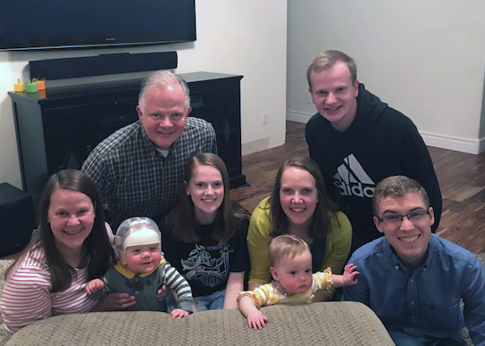

Utah
I have lived in Northern Utah my entire life. I am 21 and still single. I am currently living with my parents as I have been attending college. I have an older sister Madison and an older brother Preston. My sister has a husband, Brad, and had twins a year ago, Emery and Jacob. I currently work at my local children's museum as an assistant manager.
I enjoy playing musical instruments and so far I know how to play the piano, flute, saxophone, ukulele, and organ. I also enjoy reading, baking, painting, traveling, photography, and watching movies.
I had been attending Weber State University for the pass 5 semesters when I decided to transfer to BYU Idaho. I'm doing the Professional Studies degree where I wish to receive a Family History Research Certificate. I haven't decided what my other certificates will be in, but I'm hoping one of them will be in computers since family history work will involve a knowledge of computers. Right now I am still living at home and doing school online, but I may live on campus for future semesters.
